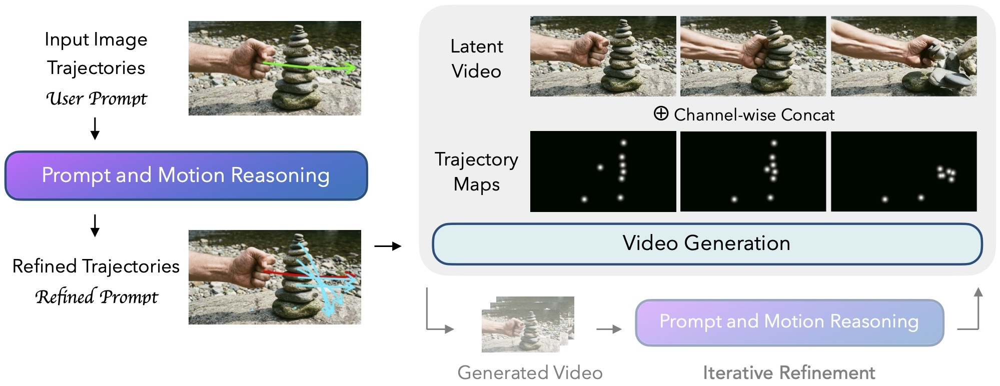
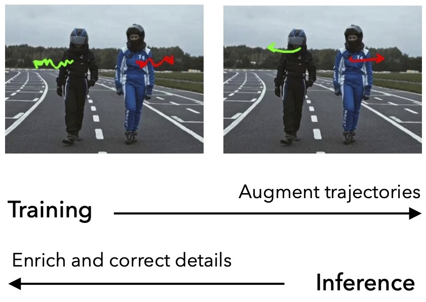
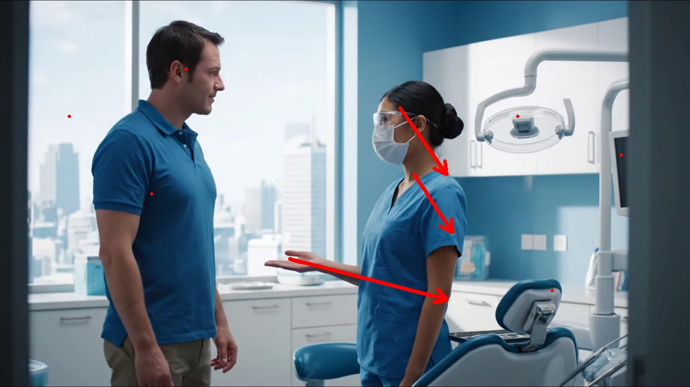

Abstract
Reasoning over intent, causality, and motion plausibility
Current motion-controlled image-to-video models often treat user-provided trajectories as literal commands, even when those inputs are sparse, imprecise, or causally incomplete. MotiMotion introduces a visual-language reasoner that refines primary motion, hallucinates plausible secondary effects, and guides a confidence-aware video generator to produce more natural and physically grounded outcomes.
Video
Method
Prompt and motion reasoning before generation
A training-free visual-language reasoner interprets the input image, trajectories, and optional text prompt to refine primary motion and hallucinate plausible secondary effects. These enriched plans guide a video generator to produce causally grounded videos.

Method
Confidence-aware control that balances user intent and generative prior
We assign a confidence score to each trajectory and modulate the motion conditioning strength accordingly. High-confidence inputs are followed strictly; low-confidence inputs let the generative prior fill in natural dynamics.


Images from MoveBench and MotionEdit.
MotiBench
Interaction-centric benchmark scenes that motivate causal motion reasoning
Each sample pairs an image with a prompt that requires plausible causal effects and world-aware motion understanding.
Results
Generated samples with refined motion and causal interaction reasoning
Red lines indicate user trajectories. Blue lines indicate predicted trajectories.
Comparison
Baselines and Ablations
Confidence-Aware Control
High-confidence inputs follow plans strictly, low-confidence inputs stay elastic
We set user trajectories (red lines) to high-confidence and show the difference between predicted trajectories (blue lines) under high and low-confidence.
Citation
BibTeX
@inproceedings{hsinying2026motimotion,
title={MotiMotion: Motion-Controlled Video Generation with Visual Reasoning},
author={Hsin-Ying, Lee and Jiang, Hanwen and Mei, Yiqun and Shi, Jing and Yang, Ming-Hsuan and Shu, Zhixin},
booktitle={Forty-third International Conference on Machine Learning},
year={2026},
}